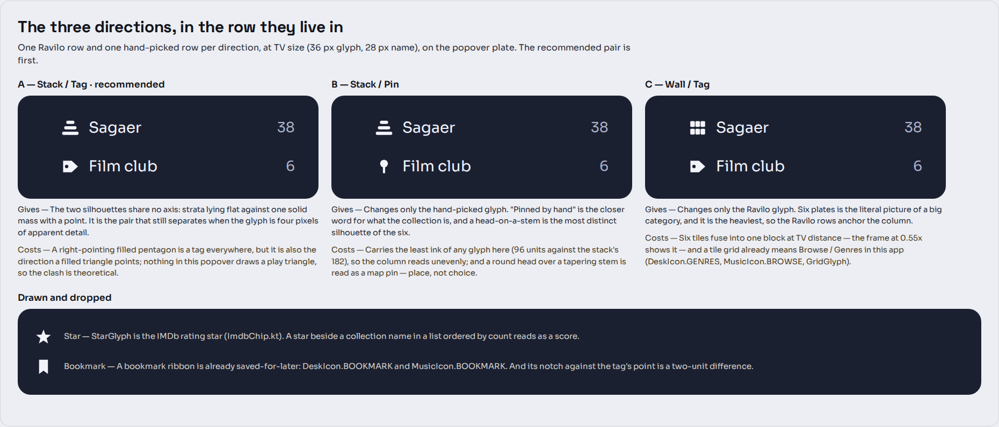
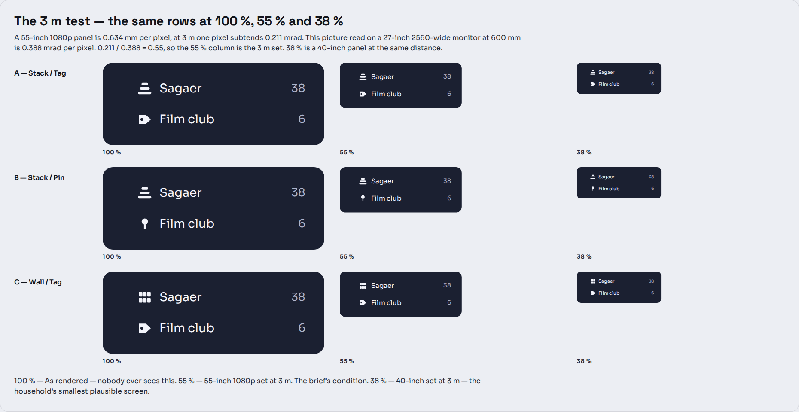
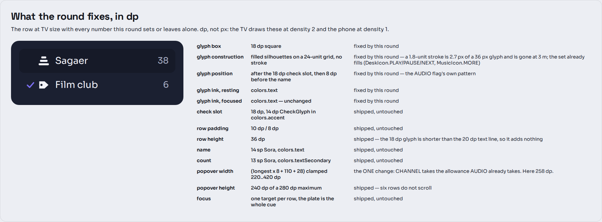
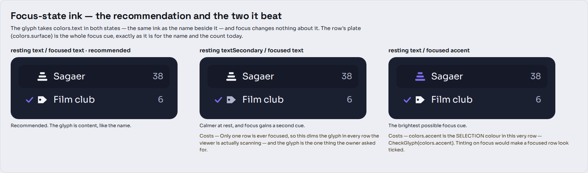
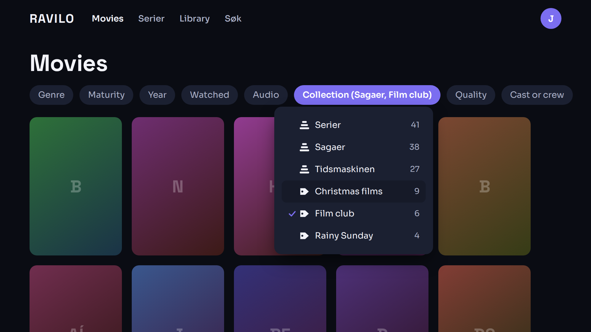
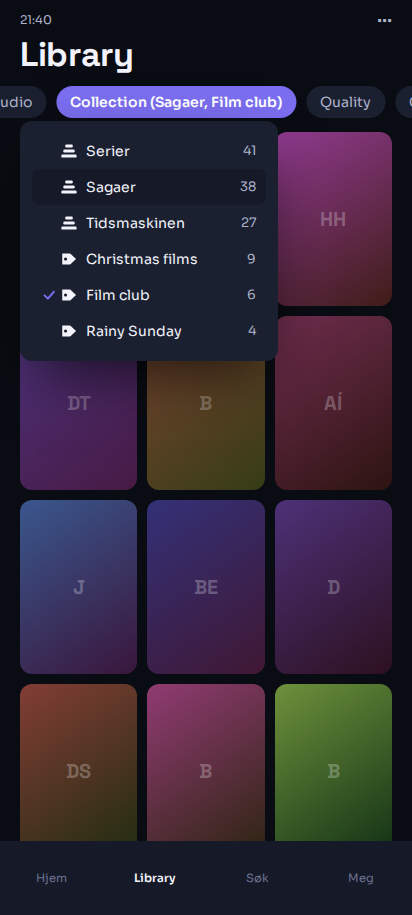
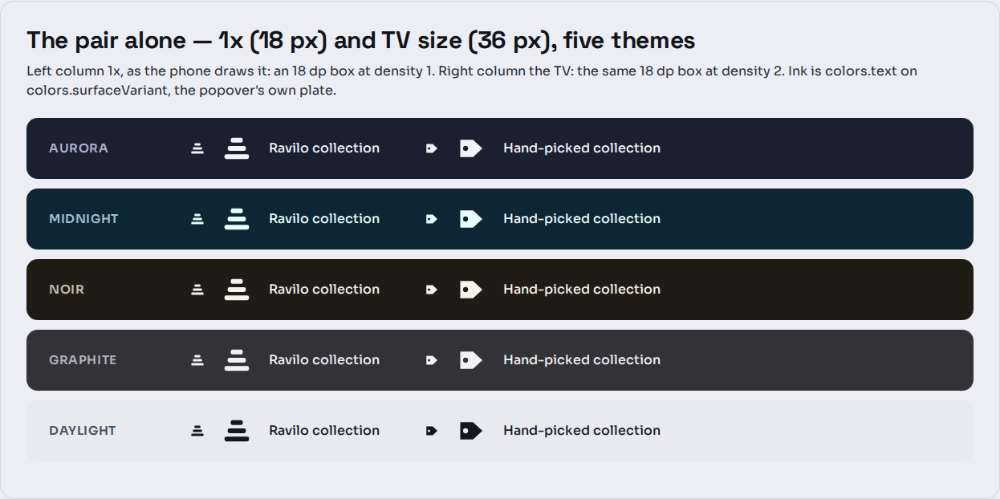
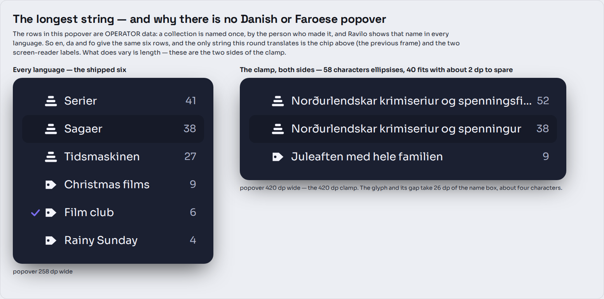
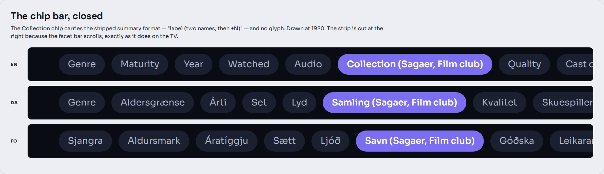

Two glyphs for Ravilo's browse Collection popover — one for a Ravilo collection, one for a hand-picked one. Three directions; the round recommends A. Drawn 2026-11-09.
CheckGlyph in colors.accent, the name at 14 sp Sora in
colors.text, the count at 13 sp in colors.textSecondary, 10 dp / 8 dp
padding, an 8 dp corner. The glyph joins that row; it does not rearrange it.cg-three-metre.The three are a factorial, not three unrelated ideas: A is the recommendation, B changes only the hand-picked glyph, C changes only the Ravilo glyph. So a pick can be “A, but the other one” without a second round.

The three pairs in the row they live in, at TV size, plus the two options drawn and dropped.
A Ravilo collection is three plates of equal height, widening downward: a pile. A hand-picked one is a filled label pointing right, with its hole: a tag someone wrote. The two differ in how the ink is distributed — three strata lying flat against one solid mass — which is the only kind of difference that survives being four pixels of apparent detail.
Costs. A right-pointing filled pentagon is also the direction a filled triangle points. Nothing in this popover draws a play triangle, so the clash is theoretical — but it is the one thing in A that is a judgement rather than a measurement.
The same stack; the hand-picked glyph becomes a head on a stem. Pinned by hand is the closer word for what the collection actually is, and the silhouette is the most distinct of the six.
Costs. It carries 96 grid units of ink against the stack's 182, so the column reads unevenly — visible in the 3 m frame, where the pin rows go faint while the stack rows hold. And a round head over a tapering stem is read as a map pin: place, not choice.
The same tag; the Ravilo glyph becomes six plates. The literal picture of a big category.
Costs. Two, and both are visible rather than argued. The six tiles fuse into one
block by the 55 % column and are a smudge by 38 %. And a tile grid already means Browse or
Genres in this app — DeskIcon.GENRES, MusicIcon.BROWSE,
GridGlyph.
| Star | StarGlyph is the IMDb rating star (ImdbChip.kt).
A star beside a collection name in a list ordered by count reads as a score. |
|---|---|
| Bookmark | A ribbon is already saved-for-later: DeskIcon.BOOKMARK and
MusicIcon.BOOKMARK. Its notch against the tag's point is a two-unit difference, which
is nothing at 3 m. |
| A tick in a card | The row already carries a tick, in the accent, 18 dp to the left. Two ticks in one row is one too many. |
| A folder | DeskIcon.FOLDER is a directory on disc. A collection is not a
place on disc and should not borrow the picture of one. |
A 55-inch 16:9 panel is 1218 mm wide; at 1920 px that is 0.634 mm per pixel, and at 3 m one pixel subtends 0.634 / 3000 = 0.211 mrad. A 27-inch 2560-wide monitor has 0.233 mm pixels; at 600 mm one subtends 0.388 mrad. 0.211 / 0.388 = 0.55, so the 1920 frame shown at 55 % of its pixels is the 3 m set. 38 % is a 40-inch panel at the same distance.

At 38 % — a 40-inch set at 3 m — A still separates, B's pin has gone faint, and C's wall has become a block.

| Size | 18 dp square, a 24-unit grid inside it. 36 px on the TV at density 2, 18 px on the phone at density 1. Larger than the 14 dp check beside it and than the name's cap height, because it is the one thing in the row that must read at distance. |
|---|---|
| Construction | Filled silhouettes, no stroke. A 1.8-unit stroke — the
desk set's — is 2.7 px of a 36 px glyph and is gone by the 55 % column. The set already fills
where it must: DeskIcon.PLAY/PAUSE/NEXT/PREVIOUS, MusicIcon.MORE. |
| Position | After the 18 dp check slot, in its own fixed-width 18 dp slot, then 8 dp before the name. Fixed width so the names stay on one left edge down a mixed list. This is the pattern the AUDIO flag already uses in this exact row. |
| Ink, resting | colors.text — the same ink as the name. |
| Ink, focused | colors.text. Focus changes nothing about the
glyph; the row's plate is the whole cue, as it already is for the name and the count. |
| Row height | Unchanged at 36 dp. The 18 dp glyph is shorter than the 20 dp text line, so it adds nothing. |
| Popover width | The one change. facetPopoverWidth gives AUDIO a 28 dp
allowance for its flag; CHANNEL needs the same 28 for its glyph (the glyph and its gap cost 26).
Without it a long collection name would overflow the clamp it currently fits inside. |

Two alternatives were drawn. Dim at rest, bright on focus is calmer, but only one
row is ever focused, so it dims the glyph in every row the viewer is actually scanning — and the
glyph is the thing that was asked for. Accent on focus is the brightest cue
available and is the worst of the three: colors.accent is the selection colour
in this very row, so a focused row would look ticked. The third column shows it.
| Drawn | TV focused on a Ravilo row · TV focused on a hand-picked row · phone 412 · chip bar closed, three languages · the pair alone at 1× and TV size in all five themes · 10-foot focus · the longest string, both sides of the 420 dp clamp · the 3 m test at two distances. |
|---|---|
| Not drawn, and why | Loading, empty, error, offline — the popover has none of its own. It is built from facet values already in hand, it is not opened when a facet has no values, and it holds no socket and no player. Desktop and the cast receiver — the desktop draws the same Compose row at the same dp (only the chip above it changes density), and the receiver has no browse page. Tizen — same paths, same fills, nothing in either glyph that Chromium 47 cannot fill. |
TV 1920 × 1080, Movies, Sagaer focused and Film club ticked.

The same popover with Christmas films focused — the glyph is the same ink in both states, so the only thing that moves is the plate.

Phone 412 dp, Library. The glyph is 18 px here, and the facet bar is drawn carried to
the Collection chip, as a scrolled LazyRow leaves it.

The pair alone, 1× and TV size, in all five shipped themes. Noir inverts the accent to
amber and Daylight is light; the glyph takes colors.text in each and needs no per-theme
rule.

Both sides of the clamp. 58 characters ellipsises; 40 fits.

The chip bar closed, in the three languages.
| The pair must differ in silhouette, not detail | The 3 m frame is the reason. Any pair that differs by a notch, a stroke weight or a small feature is the same pair at the distance this is actually used from. |
|---|---|
| Filled, not stroked | Consistency with the desk set's 1.8 stroke was the alternative and it loses the glyph at distance. The set already fills where it must. |
| 18 dp, not 16 | 16 dp is DeskIcon's default and is a pointer-distance size. The AUDIO flag in
this same row is already 20 × 14 dp. |
| Focus does not tint it | The accent is taken by selection in this row. |
| The glyph appears in every row of this popover and no other | Both kinds have a glyph, so the slot is never empty here; the other eight facets keep the row they have. |
Two new, both screen-reader only. Danish and Faroese are drafts.
| Key | English | Dansk | Føroyskt |
|---|---|---|---|
browse.collection.ravilo | Ravilo collection | Ravilo-samling | Ravilo-savn |
browse.collection.picked | Hand-picked collection | Håndplukket samling | Handplukkað savn |
The row then announces the label, then the name, then the count — “Ravilo collection, Sagaer, 38”.
browse.facet.channel ships as Channel / Kanal / Savn. The spec's
rename is Collection / Samling / Savn, so Faroese already says the word and does not
change; only English and Danish do. i18n/fo.json carries a note on that key's
neighbour warning that rás (a live-TV channel), sjónvarpsrás (a broadcaster),
Studio and Savn are four concepts and must not be merged — which is why the two
labels above qualify savn rather than reusing it bare.
The popover's rows are operator data: a collection is named once, by the person who made it, and Ravilo shows that name in every language. So there is no Danish popover and no Faroese one — only a Danish and a Faroese chip above it, and two translated labels nobody sees.